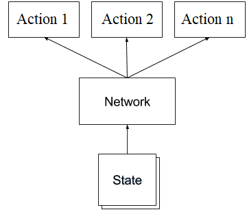

Welcome to my website! On this page, you can find details about me, my work experience, and some of the projects I've completed or am currently working on.
I am an individual with a passion for learning. To me, nothing is more exciting than struggling through a problem and finding that breakthrough solution. While studying Mechatronics Engineering at the University of Waterloo, I have been presented with countless opportunities to do so. Collaborations with classmates has led to my introduction to several interesting areas, including Web Development, Computer Vision, and Machine Learning. Outside of the classroom, I use my time to develop skills in these areas. Machine Learning is a field in which I have spent a significant amount of time. From watching video lectures, reading articles, and learning the mathematics behind model training, I have become competent in the area and an active practitioner.
When I'm not in class nor working on a side project, I enjoy going to the gym, going on runs, and playing several sports recreationally (golf, tennis, soccer).

National Research Council Canada - Ottawa, ON
I am currently working on a project that attempts to forecast sea-ice presence in several
large Canadian bodies of water, including Baffin Bay, Hudson Bay, the Great Lakes, the Northwest Territories,
and the Arctic. The model incorporates ConvLSTM's and the SIF-Net RNN architecture. It takes as input
bitmaps of several environmental conditions (current sea-ice presence, temperature, wind speed, etc.),
and outputs predictions for sea-ice presence.
I am currently developing the production aspect of the project. This involves adding to the current
data pipeline and API so that an end-user can simply provide input and receive a forecast of given length.
I have completed a Work Term Report, summarizing my work at the NRC. This report can be accessed
via the link below.
a

Vista Solutions Inc. - Windsor, ON
As a Machine Vision Support Engineer at Vista, I was responsible for developing Machine Learning
solutions for projects where traditional methods of Machine Vision could not perform at the
level required by the client. I worked on several projects during my co-op. I spent most of my time
carrying an Object Detection project to completion.
I was also responsible for training Vista Engineers and providing an introduction
to Neural Networks. I delivered a webinar presentation that introduced general structure of
Neural Networks, the mathematics behind model training, and how these concepts can be implemented
into their custom applications.
I on-boarded Vista Employees with my work, prior to my departure, and trained the incoming co-op
student. I was requested for continual support related to Vista's Machine Learning projects.
Pose Estimation is the localization of human joints. The goal of this project is to locate
all individuals in a given image or video and calculate a bounding box, use semantic
segmentation to draw a mask over the bodies, and calculate the locations of their
joints. A CNN will be used to accomplish this task.
Below you can access my Github Repo:
The goal of this project was to stand the pole upright for as long as possible; a traditional controls problem,
but with the twist of using a Reinforcement Learning approach.
Through the use of OpenAI Gym's environment, I am given control of the cart. The cart can move either left or right.
My task was to determine, given a 4D vector [Position, Velocity, Angle, Angular Velocity],
the action that will maximize the probability that the pole does
not fall over, both in short and long term.
Below you can access my Github Repo and the documentation for OpenAI Gym:

I developed a webpage written in virtually only HTML and CSS. No framework was
used to help with the design of the page.
The website is still available via the link below:

This was a first-year, first-term design project for all Mechatronics Engineering students at the University of Waterloo. It was an open-ended project. We were given a lego set and an EV3 controller. Monitoring/defending personal space was the task we chose. The final product surveyed an area and fired projectiles at approaching objects. Chassis composed of lego; source code written in RobotC. During the closing phase of the project, we produced a final report that summarized project scope, constraints and criteria, mechanical and software design and methods of testing.
Reinforcement Learning was used to solve this problem. This concept is synonymous to positive/negative reinforcements in real life:
If a dog behaves, they receive a treat; if they misbehave, you put them in their cage. After time, the dog figures out what is considered good/bad behaviour based off of the consequences.
This approach can be used to our advantage when training AI. The reinforcement learning application consists of four entities:
The approach for solving this problem is the following: train the CartPole to take actions that maximize its reward.
For a given state, it is the network's job to output a vector of probabilities for taking each action in the action space. When training, we attempt to minimize the difference between that output and the action that maximizes rewards.
For example, if the CartPole is currently travelling to the left, it is preferable to reverse that movement and begin travelling to the right. Thus, a desired output from the model is [0, 1] ([Going left, Going right]). A network without training won't necessarily generate that output. The optimizer's job is to adjust the network so that the vector approaches [0, 1] when the CartPole is moving left.
We multiply our gradients by the rewards. When performing Back Propagation, positive rewards (agent did something right) will cause the optimizer to descend down the gradient. The opposite is true for negative rewards (agent did something wrong). This process has the effect of 'learning' what the appropriate actions to take are, given a state from the environment.
There is a fundamental problem with how rewards are calculated: how does the agent know if falling at t = 100 was caused by an action at t = 98 or t = 17? This is known as the 'Credit Assignment Problem'.
To solve this problem, we apply a discount rate to our rewards. For each time step:
Discounted Reward [t = t] = Reward [t = t] * pow(discount_rate, 0) + ... + Reward [t = t + n] * pow(discount_rate, n)
Note: discount_rate belongs to (0, 1)
What does this accomplish? This decreases the impact that a future reward has on the current time step. Using discounted rewards, the agent, over many games, is able to 'learn' what actions, given a corresponding input from the environment, are beneficial.
The tf.keras API was leveraged for the formulation of models. Each model architecture developed consisted of a series of fully-connected layers. Dropout was used for the final design; this design performed the best during testing.
The final design, model_v5, consisted of the following:
Dense(32) Dropout Dense(32) Dropout Dense(32) Dropout Dense(32) Dropout Dense(32) Dense(2) SoftmaxAfter 5 iterations of the model architecture, a policy model was trained that converged and was able to survive in the environment. The program was manually stopped at 15,000 steps (about 5 minutes). It took 900 episodes of training to reach this point. Below is a video showing the agent's progress throughout the training loop.
Three resources were used to help me as I learned about Reinforcement Learning:
Machine Learning was used to solve this problem. Using the tf.keras API, a Convolutional
Neural Network was trained on the MNIST dataset. The following model architecture was
used.
Thanks to Google, I was able to train on a state-of-the-art TPU (Tensor Processing Unit)
through their free cloud service: Google Colab. On the MNIST dataset, I reached a
validation accuracy of approximately 99.2%.
It is important to note that the
numbers of the MNIST dataset are written in pen, while we are using an HTML
canvas to draw our numbers; this could slightly impact model performance.